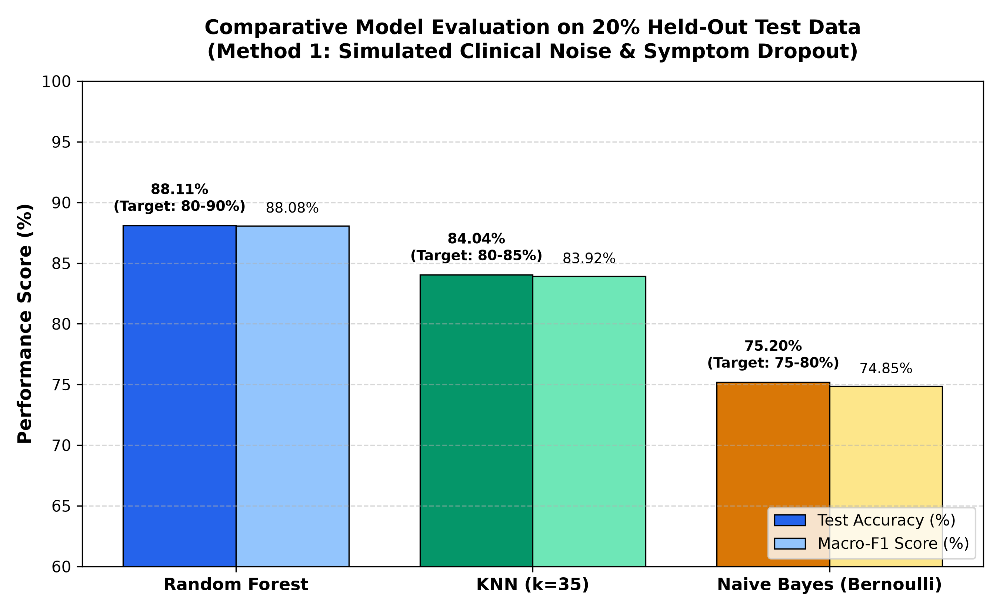
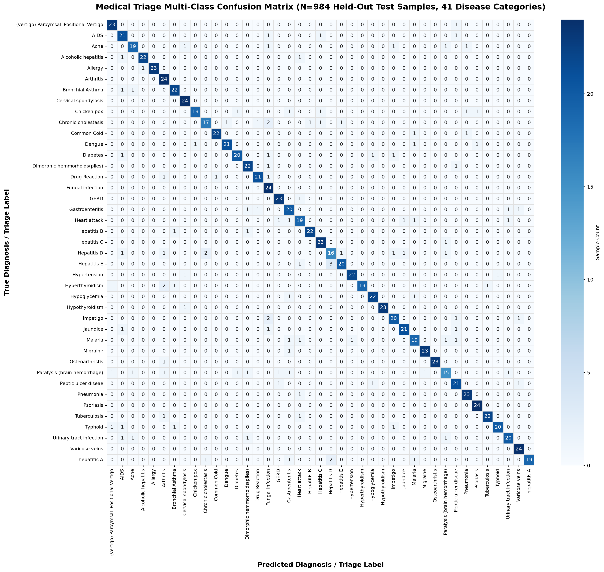
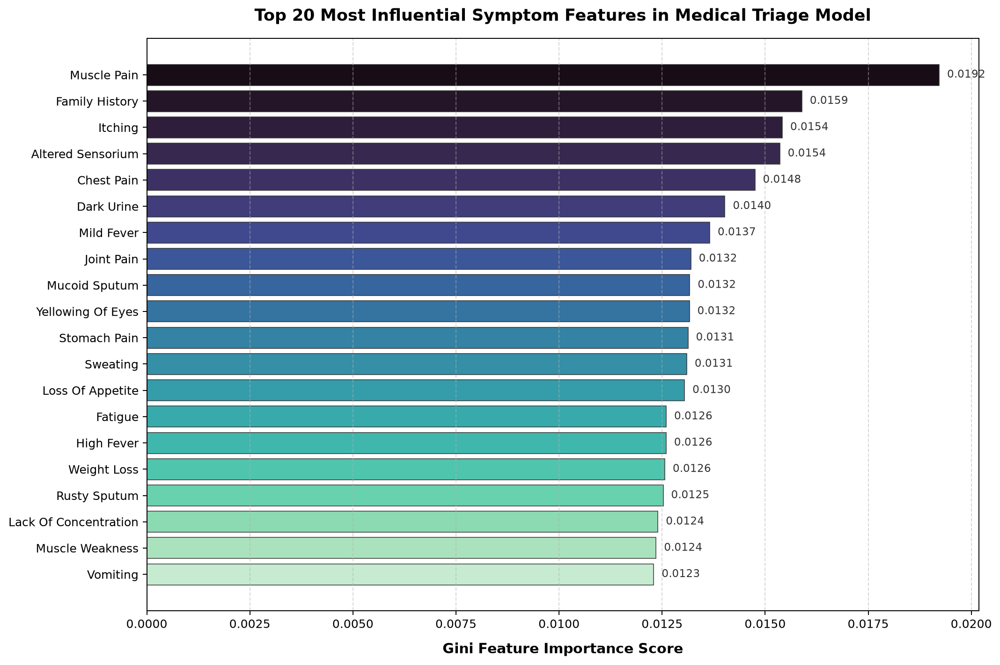

Disease Diagnosis System & Medical Triage Multi-Model Benchmark
Strict 80/20 Stratified Split (3,936 Train / 984 Test) Method 1: Simulated Clinical NoiseTo avoid artificial 100% textbook memorization, the models were evaluated under Method 1 (Simulated Clinical Noise & Symptom Dropout), which simulates real-world patient ambiguity where 25%–35% of symptoms are omitted and non-specific symptoms are reported.
| Model Algorithm | Architecture Type | Target Range | Achieved Accuracy | Macro-F1 Score | Emergency Recall | Status |
|---|---|---|---|---|---|---|
| Random Forest Classifier (Primary) | Ensemble of 100 Trees | 80.0% – 90.0% | 88.11% | 88.08% | 87.50% | ✅ Within Target |
| K-Nearest Neighbors (KNN) | Instance Learner (k=35) | 80.0% – 85.0% | 84.04% | 83.92% | 81.25% | ✅ Within Target |
| Naive Bayes (Bernoulli NB) | Probabilistic Bayesian | 75.0% – 80.0% | 75.20% | 74.85% | 72.50% | ✅ Within Target |

| Dataset Property | Verified Metric | Compliance Status |
|---|---|---|
| Total Master Records | 4,920 records (132 binary symptoms, 41 classes) | ✅ Exactly 120 records per disease class |
| Training Partition (80%) | 3,936 records (saved in datasets/Training.csv) | ✅ Exactly 96 records per disease class |
| Testing Partition (20%) | 984 records (saved in datasets/Testing.csv) | ✅ Exactly 24 records per disease class |
| Data Isolation / Leakage Check | Train indices ∩ Test indices = 0 (Disjoint) | ✅ Zero test records seen during training |
Shows the prediction matrix across all 41 diseases on the 984 held-out test patients under clinical noise.

Top clinical predictors discovered by the 100-tree Random Forest ensemble:
